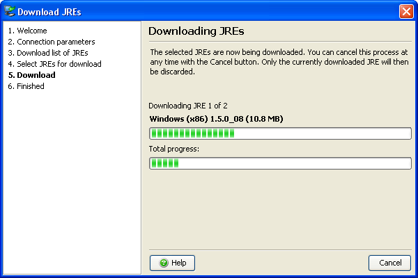
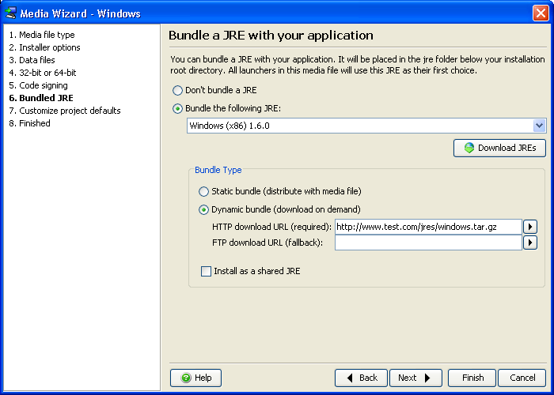
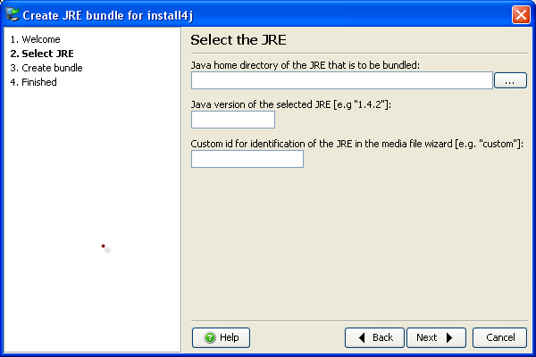

JRE Bundles


JRE Bundles |
|
Any JRE bundle that is installed by install4j will not interfere with default JRE installations. In particular, it will not be integrated into browsers and no registry entries will be written. However, it is possible to install JRE bundles as "shared", meaning that other installers generated by install4j will be aware of these bundles. A shared JRE bundle will not be uninstalled when the application that has installed the bundle is uninstalled itself. If you dynamically bundle a JRE for multiple installers and install it as a shared JRE, only the first time when a user installs one of your installers, a JRE will be downloaded. Subsequent installations of other installers will find that shared JRE.
ej-technologies offers a JRE bundle download service that is invoked from the install4j IDE.

All JREs are saved with a tar.gz extension to the directory $INSTALL4J_HOME/jres or, if that directory is not writable, to $HOME/.install4j4/jres. If you require JRE bundles on a computer without an internet connection, you can transfer these files to the equivalent location of that computer.
Please note that on Mac OS X the JRE installations are part of the operating system. For technical and licensing reasons it is not possible for applications to install their own JREs. Mac users who keep their system updated always have the latest JRE provided by Apple.
Downloaded JREs can be selected for bundling in the Bundled JRE step of the media wizards. All generated launchers use the bundled JRE as their first choice.

If you would like to put your JRE bundles in a different directory, such as a directory in a version-controlled location, you can copy the .tar.gz file (see above) to that directory and choose the "Manual entry" JRE bundle to enter the path to the bundle file.
If the JRE bundles created by ej-technologies do not satisfy your needs, you can create a JRE bundle from any installed JRE on your file system. install4j offers the "Create a JRE bundle" wizard to make this task as simple as possible.

Packaging your own JRE can be useful if you want to add standard extensions such as the Java Communications API to your JRE. The JRE bundle wizard only works for the platform you are running on. That means, to create a JRE bundle for Windows, you have to run install4j on Windows, to create a bundle for Linux, you have to run install4j on Linux.
In special cases you might want to create a JRE bundle programmatically, i.e. without using the install4j IDE. This can be done with the standard GNU tools tar and gzip. A JRE bundle for install4j is simply a file with the naming scheme:
[operating system]-[architecture]-[JRE version].tar.gz
For windows bundles, the operating system name must be "windows", for other platforms any name can be used.
The .tar.gz file directly contains the JRE, i.e. the bin
and lib folders. The steps to create a bundle are outlined below:
cd jre
tar cvf minix-x86-1.5.0.tar *
gzip minix-x86-1.5.0.tar
cp minix-x86-1.5.0.tar.gz /usr/install4j/jres
First you change into the top-level directory of the JRE, then you tar all files and directories and gzip the tar archive. The last step copies the bundle into the directory $INSTALL4J_HOME/jres. You have to restart install4j for the JRE to be listed in the "Bundled JRE" step of the media file wizard.
If you choose to bundle your JRE this way on Microsoft Windows, you have to install the tar and gzip tool available at
|
|